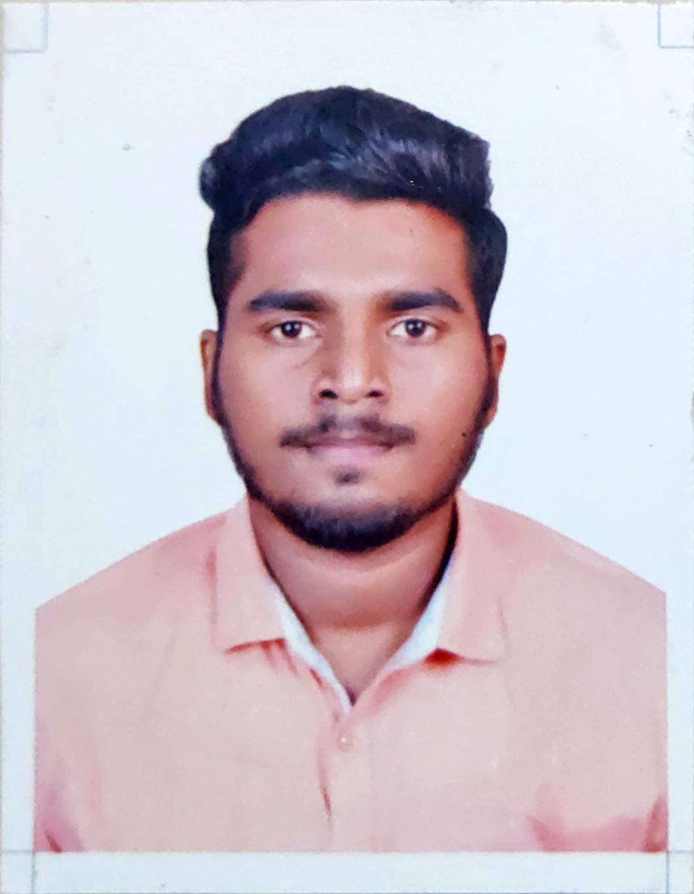

Omkar Gawas

Summary
An enthusiastic fresher who is a capable to use technical skills for the betterment of the orga
nization. A master’s degree in Computer Application has enhanced my proficiency in develop
ing web applications and looking forward to work in a competitive environment that enhances
overall learning
Education
- Bachelor of Science (Computer Science)
- Master of Computer Application
Work Experience
Skills
- Android ⭐⭐⭐
- Wed developement ⭐⭐⭐
- UI/UX ⭐⭐⭐⭐
Achievements
- Completed workshop based on content management system- 2016
- Won 2nd Place in Digital Poster Making at all Goa Intercollegiate Event- 2018
- Completed workshop based on selenium- 2019
- Completed workshop based on UI/UX- 2019
Other